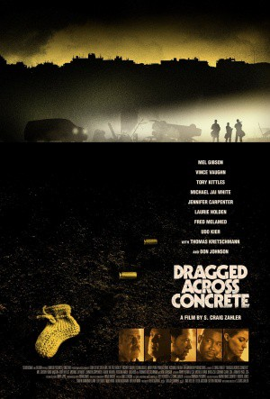
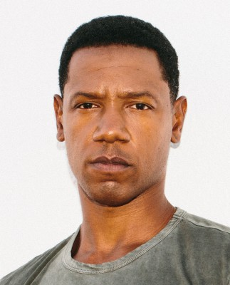
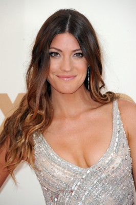
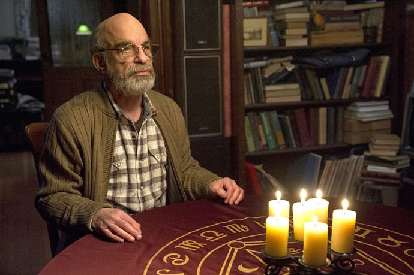

#11610 Dragged Across Concrete
 
 IMDB-Wertung: 7.0 / 10
IMDB-Wertung: 7.0 / 10  Metascore: 60
Metascore: 60 
The script centers on two policemen, one an old-timer (Gibson), the other his volatile younger partner (Vaughn), who find themselves suspended when a video of their strong-arm tactics become the media's cause du jour. Low on cash and with no other options, these two embittered soldiers descend into the criminal underworld to gain their just due, but instead find far more than they wanted awaiting them in the shadows.
Jahr: 2018
Dauer: 158 Minuten
FSK: 16
Land: Kanada Studio: BloomTonspuren: DD5.1 - ,
Untertitel: Deutsch,
Auflösung: 1080p (1920x800) Größe: 12800 MB
Genre: Thriller, Drama, Krimi
Regisseur: S. Craig Zahler
Drehbuch: S. Craig Zahler
Soundtrack: Jeff Herriott, The O'Jays, S. Craig Zahler
Darsteller:
 Mel Gibson als Brett Ridgeman
Mel Gibson als Brett Ridgeman Vince Vaughn als Anthony Lurasetti
Vince Vaughn als Anthony Lurasetti-  Tory Kittles als Henry Johns
 Michael Jai White als Biscuit
Michael Jai White als Biscuit Thomas Kretschmann als Lorentz Vogelmann
Thomas Kretschmann als Lorentz Vogelmann-  Jennifer Carpenter als Kelly Summer
 Laurie Holden als Melanie Ridgeman
Laurie Holden als Melanie Ridgeman Don Johnson als Chief Lt. Calvert
Don Johnson als Chief Lt. Calvert Udo Kier als Friedrich
Udo Kier als Friedrich Fred Melamed als Mr. Edmington
Fred Melamed als Mr. Edmington- Justine Warrington als Cheryl
 Matthew MacCaull als Grey Gloves
Matthew MacCaull als Grey Gloves Primo Allon als Black Gloves
Primo Allon als Black Gloves- Myles Truitt als Ethan Johns
 Vanessa Bell Calloway als Jennifer Johns
Vanessa Bell Calloway als Jennifer Johns- Tattiawna Jones als Denise
- Clare Filipow als Female Cashier
-  Richard Newman als Feinbaum
- Andrew Dunbar als Jeffrey
 Noel Gugliemi als Vasquez
Noel Gugliemi als Vasquez- Alexander Soto als Juan
- Eric Bempong als Wheelie
- Liannet Borrego als Rosalinda
- Adam Tsekhman als Behzad
- Trezzo Mahoro als Skinny Black Teenager
- Dalias Blake als Davids
 Giacomo Baessato als Smith
Giacomo Baessato als Smith- Jenn Griffin als Dour Waitress
- Cardi Wong als Sid
- Cameron Grierson als Dapper Salesman
- Emilio Merritt als Mexican Security Guard
 Simon Chin als Bus Driver
Simon Chin als Bus Driver- Paul Rogic als Bald White Man
- Matt Kennedy als Teenage Boy
- Andrea Pizarro als Latina Teller
- Jasmine Lukuku als Bank Staff #1
- David Quinlan als Bank Staff #2
- Harry Han als Bank Staff #3
- Veronika London als Newscaster
- Jay Hindle als Guy in Elevator
- Bzhaun Rhoden als Teen with Earings
- Brett Alexander Davidson als Christopher (uncredited)
- Jordyn Ashley Olson als Sara Ridgeman
- Vivian Ng als Lana
- Tristan Jensen als Williams
- Mekhi Fester als Tall Black Teen
- Patrick Dodd als Bank Staff #4
Datei: X:\2018(A-F)\Dragged Across Concrete (2018, FSK16, 1920x800).mkv seit 13.08.2019
Festplatte: HD 2017(A-Z)-2018(A-F)
 Es gibt insgesamt 151 Filme in der Gruppe '2018(A-F)'
Es gibt insgesamt 151 Filme in der Gruppe '2018(A-F)'